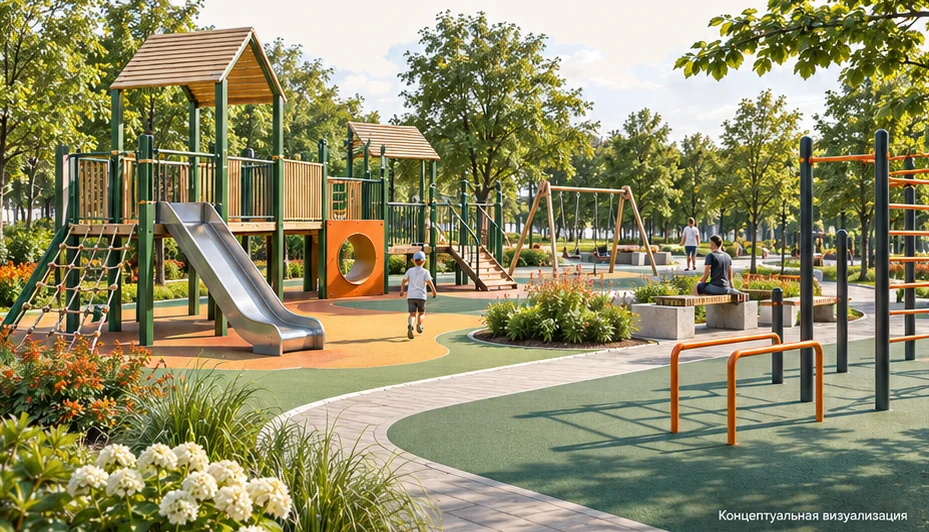

Игровые зоны
Группируем игровые сценарии с учётом возраста детей и мест для сопровождающих.
Направление 04 / 07
Начинаем с того, кто и как будет пользоваться площадкой. От этого зависят зонирование, состав оборудования, покрытия и маршруты.

Состав работ
Группируем игровые сценарии с учётом возраста детей и мест для сопровождающих.
Планируем место для тренажёров или спортивных игр и связь площадки с маршрутами.
Увязываем оборудование с покрытиями, озеленением, освещением и местами отдыха.
Исходные данные
План и фото территории, возрастные группы, формат использования и перечень оборудования, если он уже выбран.
Составить бриф